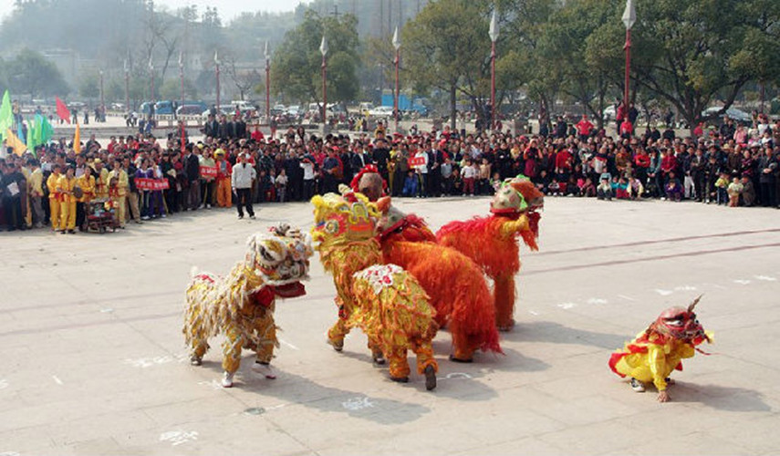
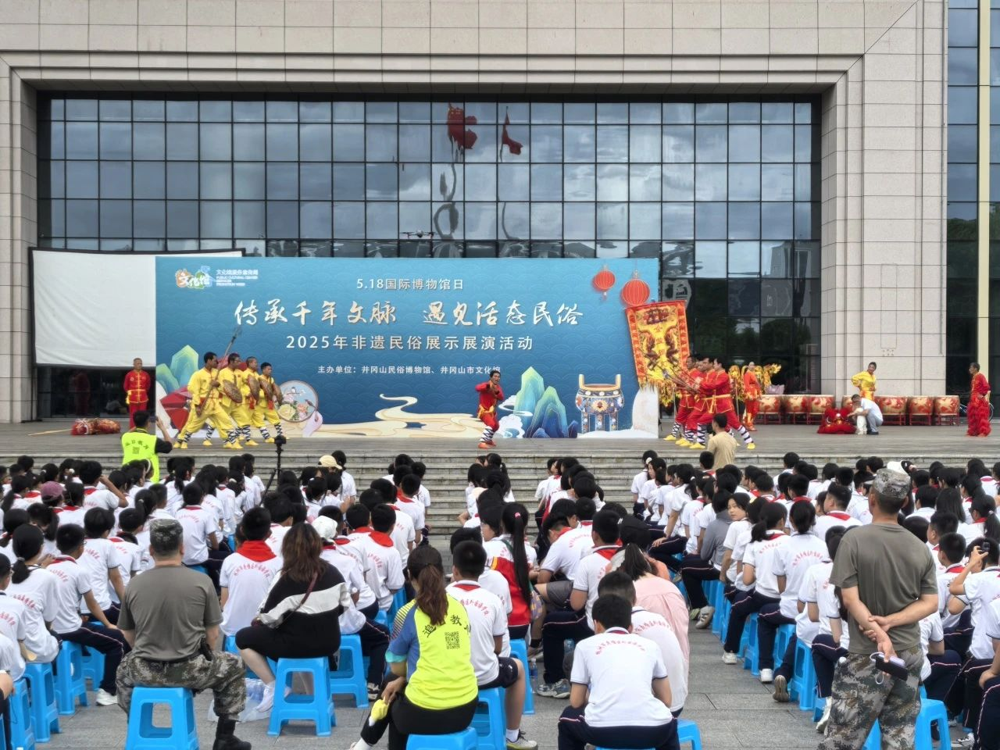

自然地理 |
 民俗人文 |
红色历程 |
||
|
井冈山位于中国罗霄山脉中段，呈东北—西南走向，地处北纬26°13′—26°52′，东经113°59′—114°18′。地势西南高、东北低，最高峰南风面海拔2120.4米。属亚热带季风气候，年均温14.2℃，年降水量1836.5毫米。地质上见证华南板块演化，生物多样性丰富，是珍稀物种的天然避难所。
|
井冈山民俗文化底蕴深厚，客家民居以青瓦白墙、飞檐翘角为特色。传统节庆丰富，如春节吃豆腐猪蹄、端午插艾佩香囊、中秋放孔明灯等。婚俗遵循“六礼”，寿诞重“一”不重“十”。民间艺术有“全堂狮灯”和舞龙灯。饮食独具风味，如酿豆腐、“井冈三石”（石鸡、石鱼、石耳）。木雕工艺精湛，多用于建筑装饰，体现当地智慧。
|
1927年10月，毛泽东率秋收起义部队上井冈山，创建中国第一个农村革命根据地。1928年4月，朱毛会师成立红四军，壮大革命力量。根据地推行土地革命，颁布《井冈山土地法》，并形成"十六字诀"游击战术。艰苦斗争中孕育出"坚定信念、艰苦奋斗"的井冈山精神。现保留大量革命遗址，成为重要红色教育基地。
|
|  | .jpeg) |
|
|
|